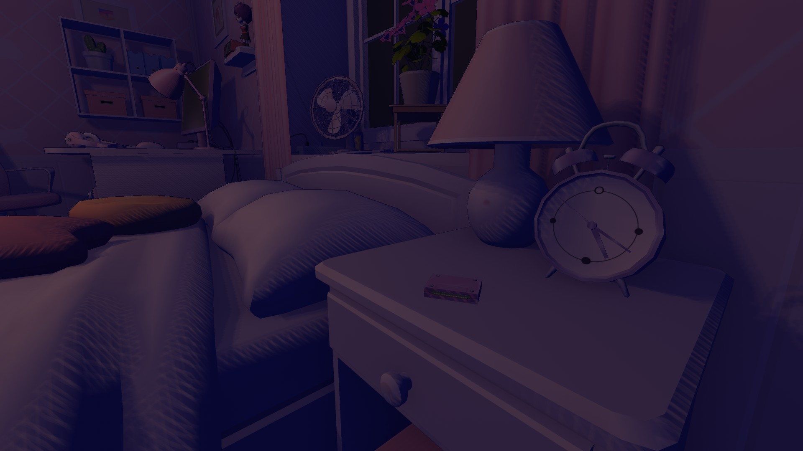

| Player's Cartridge's | Level | Location |
|---|---|---|
| Player 1 | Leave The Core | Automatically Obtained Upon Compleing The True Ending |
| Player 2 |
Beyond the World | After You Reach The Endless Hallway Turn Left And Just Walk That Path Until You See A White Box |
| Player 3 |
The Basement | After Going To The Basement Just go Straight To The Studio You Will Find A Cartridge On The Shelf Beside Two Jar's |
| Player 4 |
The Loop | You Can See Which Room You Have On the Right Side Of You the Moment You Enter A Room, You Will See A Cartridge Beside The Flower Vase On Left Side The Moment You Enter The 14th Room |
| Player 5 |
Mini Mita | After Entering The World 1.15 You Will Find A Cartridge On Top Of The Shelf on The Left |
| Player 6 |
Reboot | Instead Of Entering Your Code, Go To The Scanner Of The Machine Theres A Cartridge lying In There (What Is A Machine? Its The Tool We Used As A Portal) |
| Player 7 |
Reading Books, Destroying Glitches | After Mila Finished Showering, Instead Of Fixing The Glitch Inside, Take The Cartridge On Your Right Side On Top Of The Shelf the Moment You Enter The Bathroom |
| Player 8 |
Old World | After Going Inside Core Room Barrier, Look To Your Left And Take The Cartridge On Top Of The Metal Barrel |
| Player 9 |
Old World | When You Enter This Level, After You See Crazy Mita Leave, Head To The Bedroom, Walk Towards The Computer Table, You Will Find A Cartridge On The Checkered Box Near The Shelves |
| Player 10  |
Be Candid | After Starting This Chapter Head Straight To The Bedroom, You Can Find The Cartridge On the Night Stand Beside The Bed |